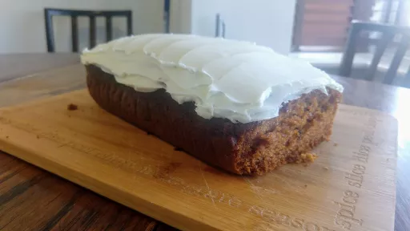

Tomato soup cake
45 mins
Serves 12

Ingredients
-
2½
cups flour
-
1½
cups sugar
-
4
tsp baking powder
-
1
tsp baking soda
-
1½
tsp all spice
-
1
tsp cinnamon
-
¾
tsp ground cloves
-
½
cup oil
-
2
eggs
-
¼
cups water
-
1
can tomato soup
-
1
tub Betty Crocker Rich and Creamy vanilla frosting
Instructions
- Preheat oven to 180°C and grease 2 loaf pans,
- Sift flour, sugar, baking powder, baking soda, all spice, cinnamon, and ground cloves together in a large mixing bowl.
- Add the oil and beat the mixture.
- Add eggs, water and tomato soup and beat again.
- Divide equally into the 2 loaf pans
- Bake at 180°C for 25-30 minutes
- Allow to cool, then frost
- Enjoy the deliciousness of your tomato soup cake!
Simon's Wife
Short Link
Long Link